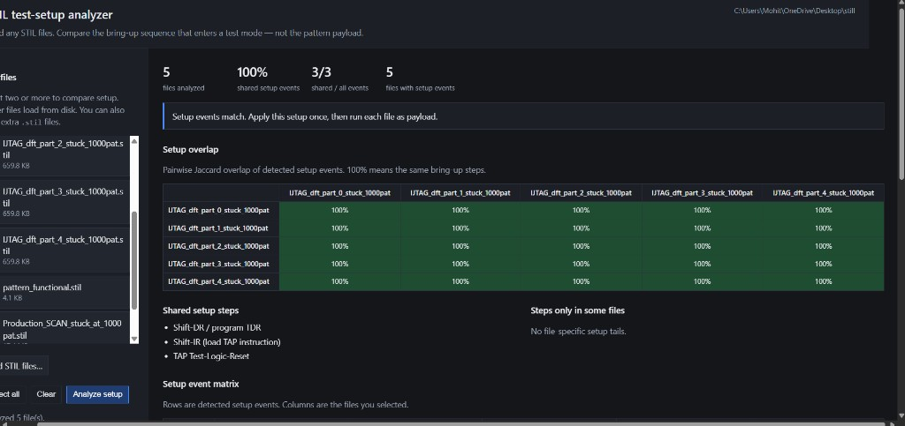
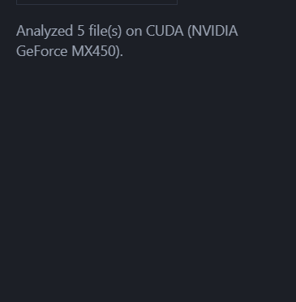
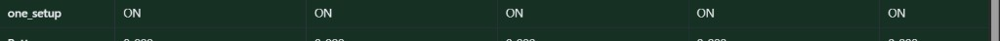
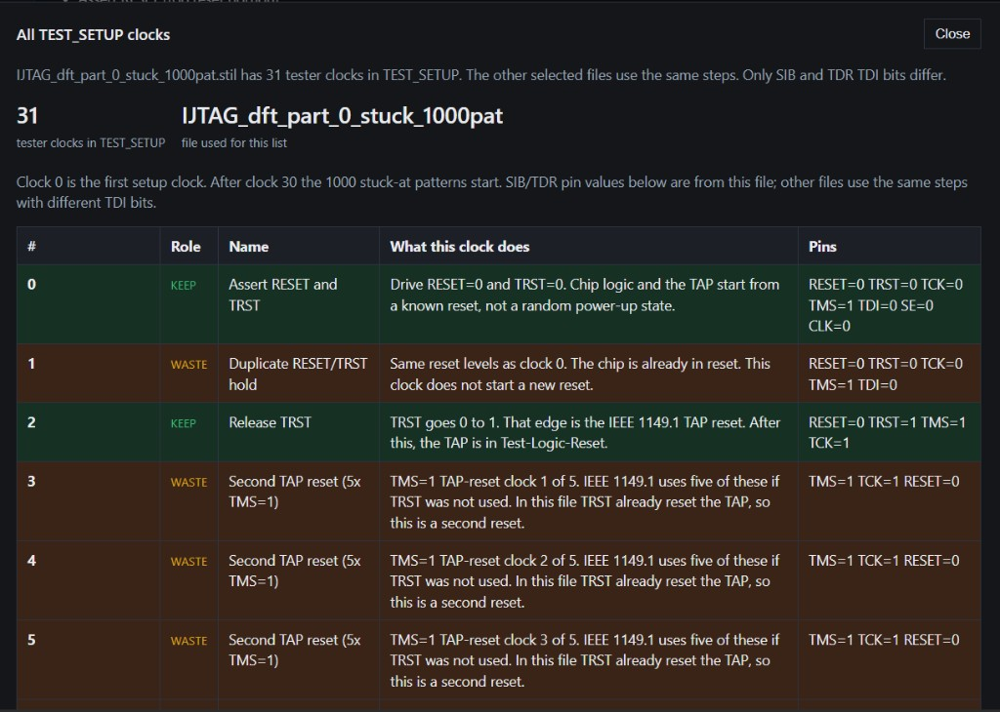
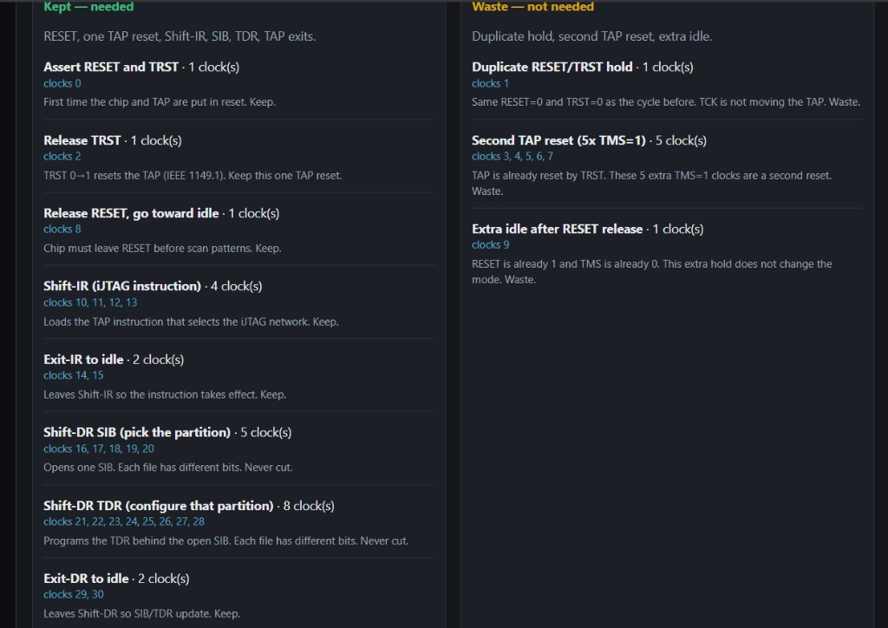
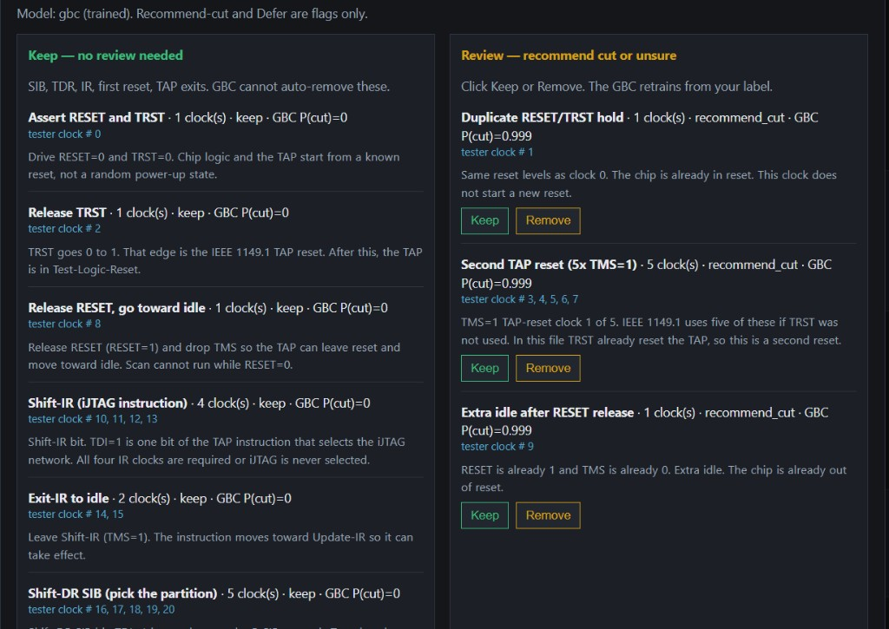
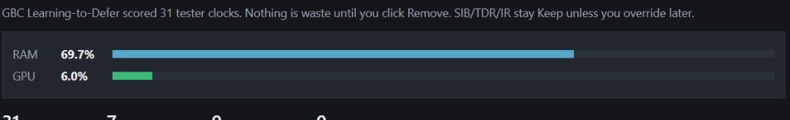

Select or insert STIL files, analyze the test setup, explore every tester clock, then optimize and review. You can generate and download every report.
On the left pane, pick the files you want to compare. Use the kit files already listed, or insert your own.
.stil files (the five IJTAG_dft_part_* files are the usual set)..stil files to insert them.
Left: STIL file list and Analyze setup. Right: results after you run Analyze.
Click Analyze setup. The dashboard parses TEST_SETUP (not the 1000-pattern payload) and shows what is the same in every file versus what is unique (partition / SIB / TDR).

Status after Analyze completes.

Example common row: one_setup = ON in every selected file.
After Analyze you can generate an HTML report of the common vs not-common tables.
stil-setup-report-….html. Open it in any browser or share it.Click Explore 31 setup clocks. This lists every tester clock in the bring-up and explains what it is (reset, TAP, Shift-IR, SIB, TDR, exits).

Explore window — All TEST_SETUP clocks. Clock 0 is the first setup clock. After clock 30 the 1000 stuck-at patterns start. SIB/TDR pin values are from this file; other files use the same steps with different TDI bits.

Same Explore flow, grouped: each tester clock and why it is kept or looks like waste. SIB / TDR / IR stay required.
Click Optimize setup clocks. The review window scores clocks with Learning-to-Defer + GBC. Nothing is cut until you click Remove.

Optimize / review window. You decide. The GBC only recommends.

RAM / GPU utilization for this job (recorded peak stays after the job goes idle).
Every stage can export a report (and Optimize can also export new STIL files).
| Where | Button | What you get |
|---|---|---|
| After Analyze | Download HTML report | Common vs different setup tables, shared steps, per-file SIB/TDR. |
| Explore window | Download HTML report | All tester clocks and what each one does. |
| Optimize window | Download HTML report | Keep / review / removed clocks after your decisions. |
| Optimize window | Download optimized STIL | ZIP of rewritten STILs. Only clocks you marked Remove are cut. |
You can generate these as many times as you want after each Analyze / Explore / Optimize run.